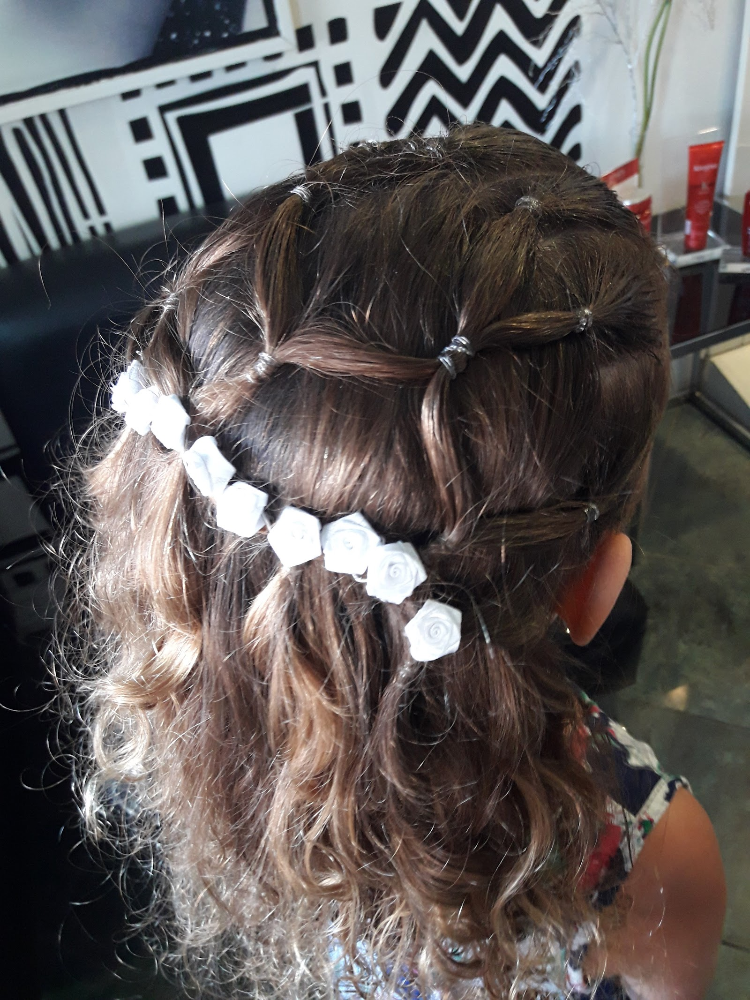
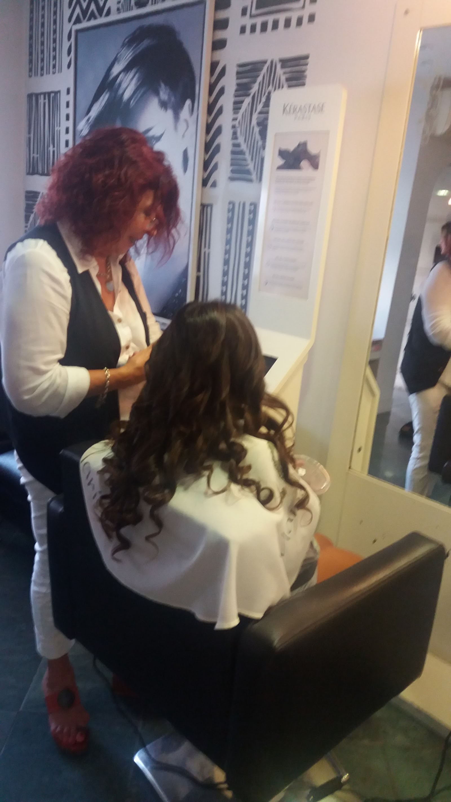

Corte y peinado
Turnos para renovar el look con una atención cercana y cuidada. La idea es conversar qué querés mantener, cambiar o acomodar antes de avanzar con el corte y el peinado.
Peluquería boutique · Tandil
La atención de lujo que Tandil elige en 11 de Septiembre 388, con corte, color y tratamientos capilares. Si querés coordinar un servicio, el teléfono está arriba para reservar de martes a sábado y confirmar el horario antes de acercarte.
Boutique con tijera de mostrador
Tijera negra sobre mostrador crema, araña de cristal cálida y estantería Kerastase: el salón tiene una identidad propia antes de que empiece el turno. Ese ambiente acompaña un trato cercano, prolijo y personal, el mismo que se repite en las reseñas con 4.8 sobre 5 en Google.


Clientas del salón
"lleve a mi nena de 7 años corte de punta y lavado, súper amorosas y una atención excelente ❤️"
"Muy amable y profesional."
"Muy muy buena onda y atención personalizada de lujo"
Reservá tu turno
Teléfono directo para coordinar corte, color o tratamientos. El salón atiende de martes a sábado, de 9 a 18, y permanece cerrado lunes y domingo. También podés usar la llamada para consultar qué servicio conviene reservar según lo que necesitás.